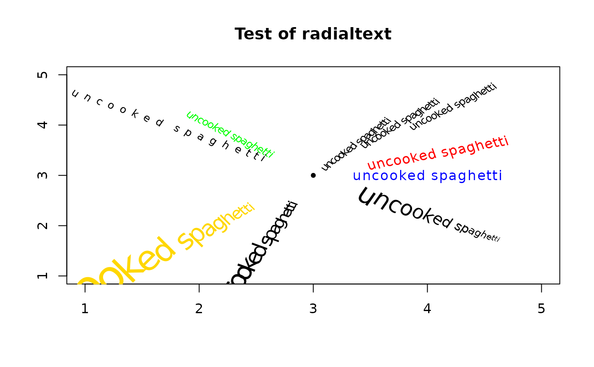

Display text in a radial line
radialtext.RdDisplays a string in a radial line, rotating it to flow in the radial direction and optionally scaling each letter's size according to its distance from the center.
Usage
radialtext(x, center=c(0,0), start=NA, middle=1, end=NA, angle=0,
deg=NA, expand=0, stretch=1, nice=TRUE, cex=NA, ...)Arguments
- x
A character string.
- center
The center of the circular area in x/y user units.
- start
The starting distance of the string from the center in x/y user units.
- middle
The middle distance of the string from the center in x/y user units.
- end
The ending distance of the string from the center in x/y user units.
- angle
The angular position of the string in radians.
- deg
The angular position of the string in degrees (takes precedence if not NA).
- expand
Size expansion factor for characters, used only if start specified.
- stretch
How much to stretch the string for appearance, 1 for none.
- nice
TRUE to auto-flip text to keep it upright, FALSE to let it be upside down.
- cex
The overall character expansion factor, NA for par("cex").
- ...
Additional arguments passed to text.
Details
This may not work on all devices, as not all graphic devices can rotate text to arbitrary angles. The output looks best on a Postscript or similar device that can rotate text without distortion. Rotated text often looks very ragged on small bitmaps. If the user passes a value for start, this will override a value for middle or end. Likewise, a value for end will override a value for middle. Also, a value for deg overrides any value passed to angle. If expand is 0, all characters will be the same size, while a value of 1 will scale characters so that one that is twice as far from the center will be twice as large. Negative values are permitted too, but expand is only used if start was specified.
Examples
plot(0, xlim=c(1,5), ylim=c(1,5), main="Test of radialtext",
xlab="", ylab="", type="n")
points(3, 3, pch=20)
radialtext("uncooked spaghetti", center=c(3,3),
col="blue")
radialtext("uncooked spaghetti", center=c(3,3),
start=1.2, angle=pi/4, cex=0.8)
radialtext("uncooked spaghetti", center=c(3,3),
middle=1.2, angle=pi/4+0.1, cex=0.8)
radialtext("uncooked spaghetti", center=c(3,3),
end=1.2, angle=pi/4+0.2, cex=0.8)
radialtext("uncooked spaghetti", center=c(3,3),
start=0.5, deg=135, cex=0.8, col="green")
radialtext("uncooked spaghetti", center=c(3,3),
start=0.5, deg=145, cex=0.8, stretch=2)
radialtext("uncooked spaghetti", center=c(3,3),
start=0.5, deg=20, expand=0, col="red")
radialtext("uncooked spaghetti", center=c(3,3),
start=0.5, deg=250, expand=0.35)
radialtext("uncooked spaghetti", center=c(3,3),
start=0.75, deg=225, expand=1, col="gold")
radialtext("uncooked spaghetti", center=c(3,3),
start=0.5, deg=325, expand=-0.25, cex=2)
